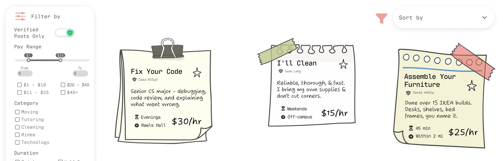
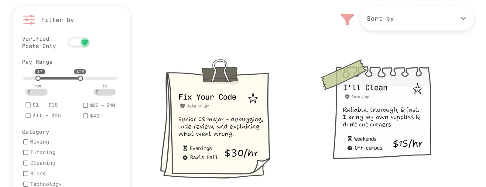
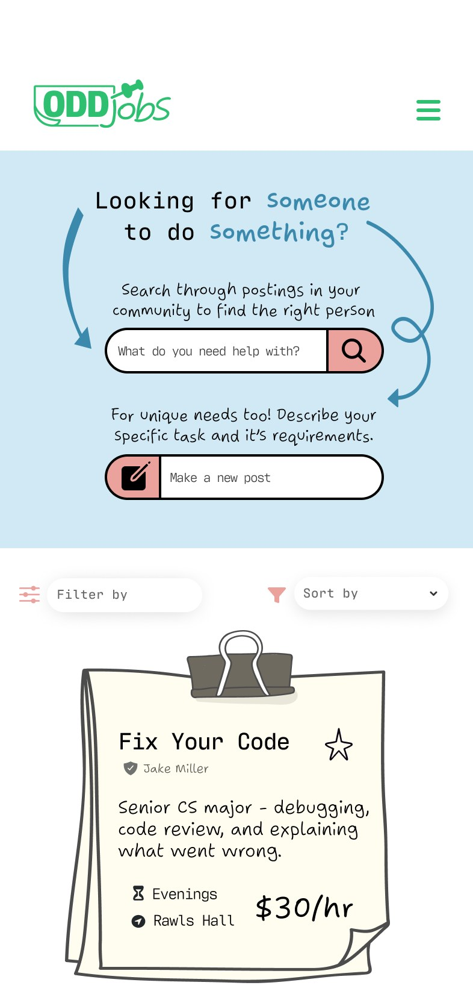
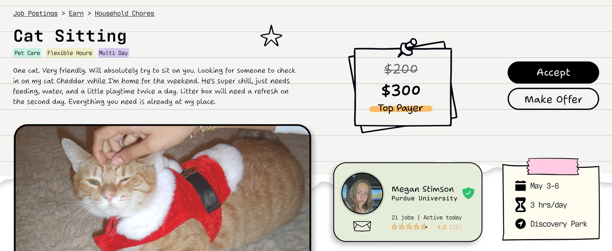
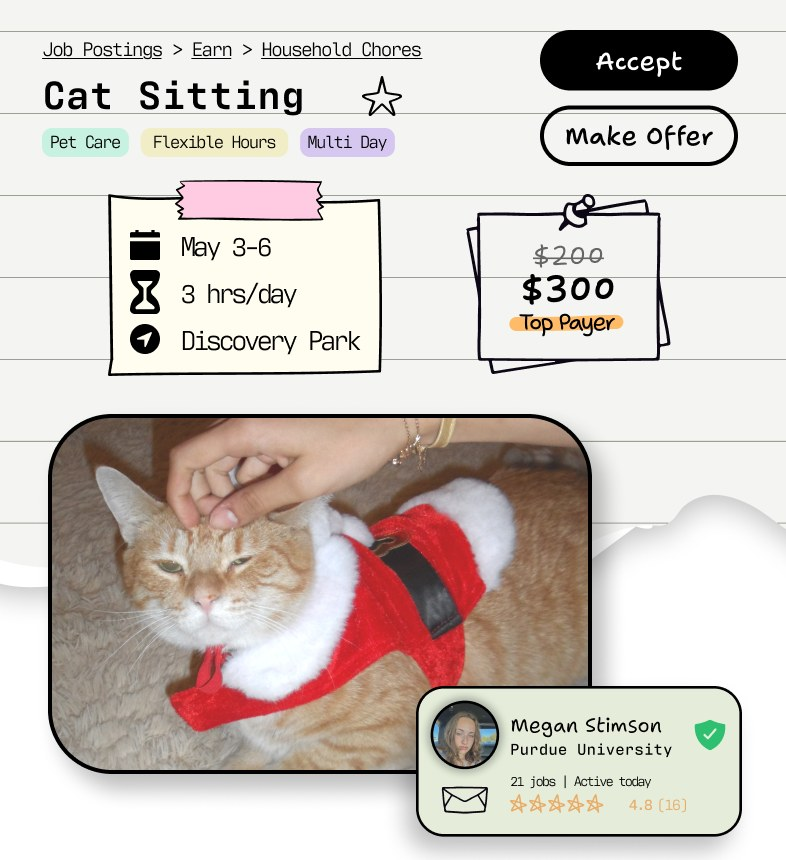
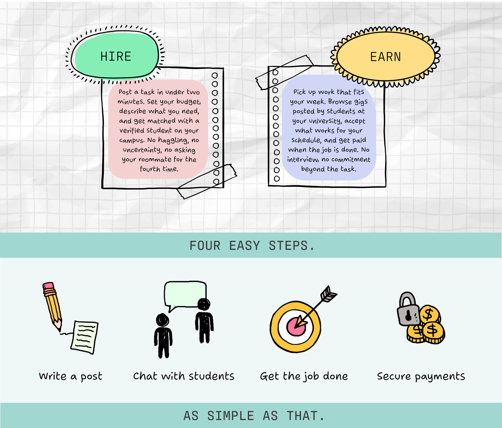

Odd Jobs
Odd Jobs is a take on a job board that focuses on university students.
- Year
- 2026
- Context
- Course project
- Tool
- Figma

/ Problem
Students need things done and don't have money to spare: cleaning, laundry pickup, watching cats, watering plants, help moving. Students also need money, but often can't commit to a regular job because the hours don't fit around classes. The informal version of this already happens on campus.
/ Decision 01
Verification.
The first decision was how to make a job board that actually works for university students with difficult schedules. Sign-up is linked to a university email, so everyone on the platform is a verified student. That keeps it trustworthy.
/ Decision 02
Familiarity.
Traditional job boards are formal and high pressure. I took a different approach, drawing on the bulletin boards and chore charts of classrooms, a familiar system where everyone contributes. It signals trust and shared contribution over competition, and reframes the platform as low stakes and community-driven.

/ Decision 03
Responsive design across three breakpoints.
Each component was adapted into desktop, tablet, and mobile variants to optimize the same content for different forms of interaction. Decisions at each breakpoint covered column structure, navigation, information hierarchy, and type scale. Card grids go from three columns to two to one, filters move from a sidebar into dropdowns, and navigation collapses into a hamburger menu on mobile.





/ Final work


/ Outcomes
The result is a high-fidelity responsive prototype across desktop, tablet, and mobile, with a recorded walkthrough.
- Context
- Course project, AD 319, Purdue, Spring 2026
- Skills
- UX researchinformation architecturepersonasuser flowswireframing